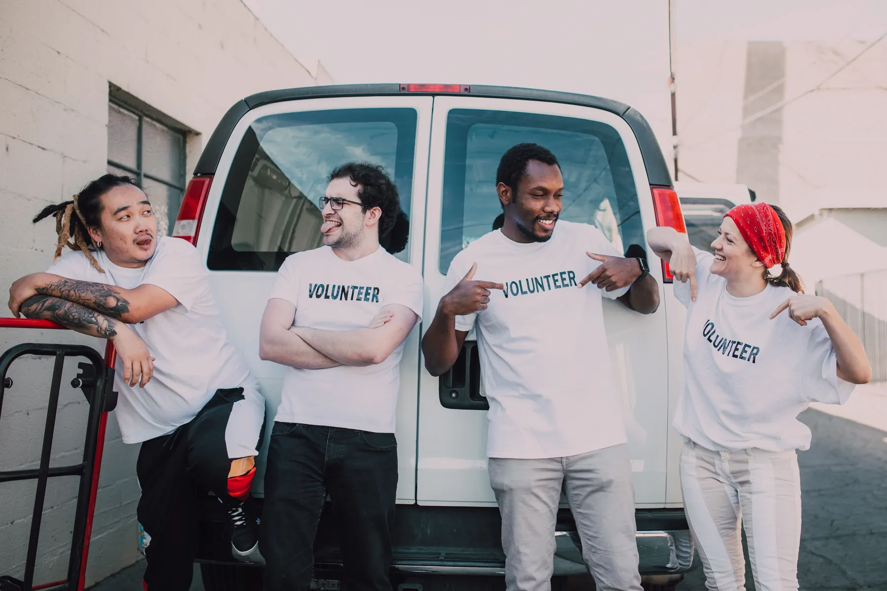
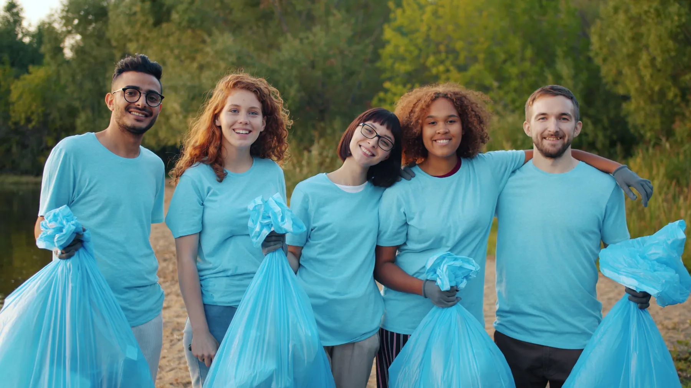
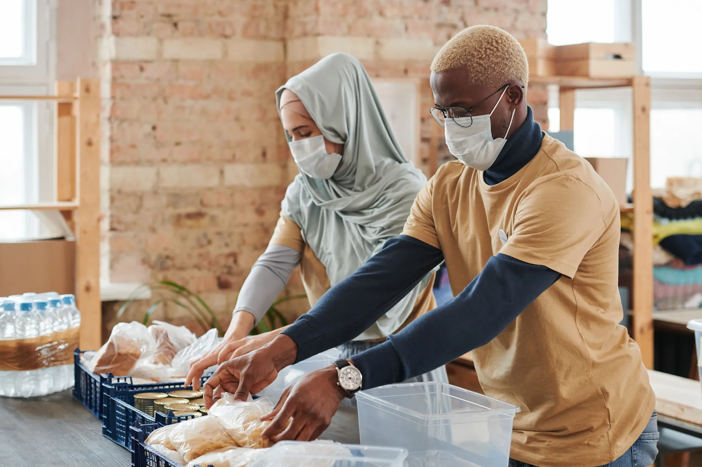
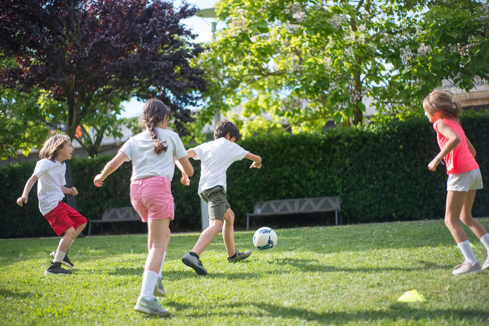

Community action with local people at the centre
Building stronger communities for tomorrow.
Bridge For Tomorrow brings people together through practical support, sport and neighbourhood action across Sparkhill, Sparkbrook, Solihull and nearby areas.
Community-ledPracticalInclusive

What we do
Small actions that create visible local change.
We currently focus on three practical activities. As funding grows, we aim to offer more opportunities for children, families and residents.

Cleaner neighbourhoods
Litter picking
Local clean-ups that improve shared spaces and build community pride.

Practical support
Food distribution
Helping food reach local people and families who need support.

Sport and connection
Football at Sparkhill Park
Friendly sessions that bring young people together through sport.

Where we are going
More activities need more backing.
We want to grow into youth activities, family events, wellbeing sessions, holiday programmes and employability support. Funding and strong partnerships will help us deliver these safely and consistently.
Explore our funding priorities →Get involved
Start a conversation